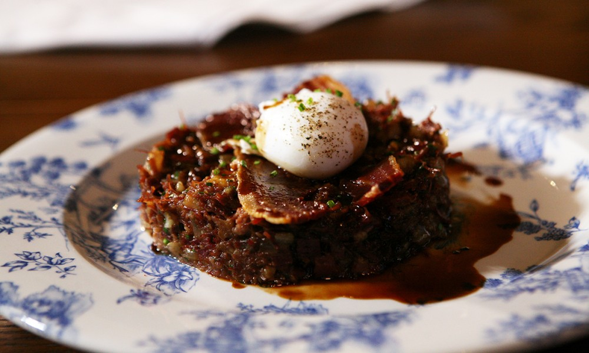

Mrs Sarah's Chop House
52 Cross Street, Manchester, M2 7AR
This is one of Manchester's most iconic and historic pubs, founded in 1867. Previously known as Mr Thomas's Chop House, Mrs Sarah's Chop House proudly offers classic British dishes ranging from Steak and Kidney pudding, Chicken Liver Pâté and Mr Thomas's Famous Corned Beef Hash. The Albert Square Chop House and Sam's Chop House can also be found in the heart of the city centre, and were also founded by members of the same family.
Pieminister
53 Church Street, Manchester, M4 1PD

This Pieminister cafe is located right in the heart of Manchester in Northern Quarter, the perfect spot to visit after hitting the shops. Pieminister has over 15 different award-winning pies to choose from, with various tasty sides. "In Manchester and new to Pieminister? Give the legendary Mothership a try. Originally created for the fields of Glastonbury Festival back in 2004, the Mothership combines your favourite pie on a base of buttery mash, topped with mushy peas, crispy shallots and cheese. Served up with a whole boat of gravy, it’s the ultimate pie feast. Wash it down with a craft ale or one of our ciders for the perfect introduction to Pieminister." A pie I would definitely recommend would be the the 'Chicken of Aragon' which conists of chciken, dry cured bacon and tarragon! They also have a range of gluten free and veggie pies, so if you're looking for a good pie, hit Pieminister up!
Browns
1 York Street, Manchester, M2 2AW

Browns Brasserie & Bar offer classic seasonal British dishes, as well as bespoke cocktails in a vibrant atmosphere. Choose from afternoon tea, fresh British lobster specials or even a delicious Sunday roast dinner. Each of the classic and contemporary brasserie dishes are freshly-prepared and made with seasonal ingredients. Visit Browns in Manchester to enjoy a modern twist on classic British dishes.
Back to homepage